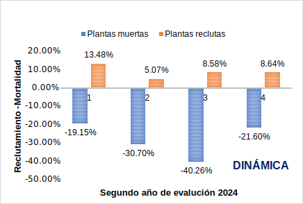

| Etapas y temas de investigación | 2022 | 2023 | 2024 | N°total |
|---|---|---|---|---|
| A. Aprobación de la investigación | - | 1 | - | 1 |
| 1. El Águila Inca (Spizaetus Isidori) En Las Áreas Naturales Protegidas Del Perú | - | 1 | - | 1 |
| B. Levantamiento de información | - | 1 | 1 | 2 |
| 2. Evaluacion de la efectividad de la gestión de las áreas naturales protegidas de administración nacional del Perú | - | 1 | - | 1 |
| 3. Dinamica temporal de la vegetación en el sector Chambirillo | - | - | 1 | 1 |
| C. Análisis y redacción | 5 | 4 | - | 9 |
| 4. Inventario comparado de Morpho y Brassolini en la faja subandina del Huallaga (San Martín) y la Sierra del Divisor (Ucayali) | - | 1 | - | 1 |
| 5. Posicionando la Evidencia del potencial de las Soluciones basadas en la Naturaleza para la recuperación económica en el Perú | 1 | - | - | 1 |
| 6. Proyecto de Investigación Análisis comparativos de morfología, vocalizaciones, y genética de aves en la Cordillera Azul | - | 1 | - | 1 |
| 7. Reconocimiento Arqueológico con Excavaciones Restringidas en la Intercuenca del Alto Huallaga Huánuco | - | 1 | - | 1 |
| 8. Sucesión natural en bosques perturbados dentro del Parque Nacional Cordillera Azul | 1 | - | - | 1 |
| 9. Taxonomía y Filogenia de Rubiaceae | - | 1 | - | 1 |
| 10. Descripción especie nueva- pez troglofílico | 1 | - | - | 1 |
| 11. Conservación del antiguo árbol “shihuahuaco” Dypterix micrantha Harms (Fabaceae), una especie neotropical amenazada | 1 | - | - | 1 |
| 12. Sustainable livelihoods, deforestation, and supply chains: Analysis of environmental and socio-economic data from the frontier of the Peruvian Amazon | 1 | - | - | 1 |
| D. Sin Información | 4 | - | - | 4 |
| 13. Análisis del Blockchain para evitar doble contabilidad en REDD | 1 | - | - | 1 |
| 14. Inventario de primates en el valle del Aspuzana | 1 | - | - | 1 |
| 15. Diversidad de hongos artrópodo- patógenos del PNCAZ | 1 | - | - | 1 |
| 16. Evaluación rápida de los conflictos gente-fauna (CGF) dentro del SINANPE | 1 | - | - | 1 |
| Total general | 9 | 6 | 1 | 16 |
Resultado
Se promueve la investigación priorizando al interior del ANP y se usa la información en la gestión del PNCAZ y su ZA
2.1 Resultados Intermedio: Investigaciones priorizadas realizadas, cuyos resultados y recomendaciones son incorporadas en la gestión del PNCAZ
2.1.1 Promoción de Investigaciones prioritarias para la gestión del PNCAZ y su ZA
2.1.1.1. Conformación de un comité de investigadores que ayuda a identificar y promover investigaciones dentro del PNCAZ y su ZA.
Esta actividad está programada para el segundo trimestre 2024
2.1.1.2 Evaluación, actualización e identificación de las prioridades y vacios de información en el PNCAZ y su ZA, en el marco de la actualización del Plan Maestro
En octubre 2023, se definió una lista de prioridades de investigación por temática, en concordancia con las ya definidas en el Plan Maestro 2017 - 2021, adicionando aquellas investigaciones que se han realizado en la Zona de Amortiguamiento y dentro del parque, posterior al Plan Maestro. Esta lista fue desarrollada en CIMA y compartida con la jefatura del PN Cordillera Azul, quién dio su visto bueno.
Esta nueva lista, es una línea base que servirá para mantener y actualizar las líneas de investigación, considerando su contribución a la gestión, en el corto, mediano y largo plazo. Así como aquellas, que son de interés para la comunidad científica nacional e internacional, que desea realizar investigaciones dentro y fuera del parque (Anexo 2.1.1.2). Es bajo estas líneas de investigación, que entre septiembre y diciembre 2023, se realizó el primer concurso de becas de investigación.
Junto con la conformación del comité de investigadores y participación de la jefatura, se trabajarán las prioridades, el cual se incluirá en la actualización del nuevo Plan Maestro.
2.1.1.3. Concurso anual de investigaciones prioritarias dentro del parque y su ZA (nota: el comité evalúa las propuestas).
Esta actividad se iniciará en los siguientes trimestres del año 2024. Se viene trabajando en nuevas bases y objetivos de la convocatoria.
2.1.1.4. Establecer convenios con instituciones de investigación *Como meta se propone dos proyectos financiados.
Esta actividad está programada para el tercer trimestre.
2.1.2. Monitoreo de la vegetación y fauna silvestre del PNCAZ
Identificación de sitios prioritarios para generación de base de datos por su importancia turística y biológica en el Parque y su ZA
En este primer trimestre, se está evaluando áreas prioritarias de investigación, para generar información ecológica, ambiental y social, de las iniciativas de conservación, en la Zona de Amortiguamiento del parque (Figure 3.1, Anexo 2.1.2). Estas áreas serán priorizadas, para realizar una línea base de diversidad, que contribuirán a fortalecer la información científica para el turismo, así como su importancia para la conservación de especies. Esta información será parte de la propuesta turística y de conservación de las comunidades que administran los recursos, para aumentar su oferta y conseguir fondos. Además de tener una línea base para el monitoreo de los objetos de conservación, que justificarán las actividades turísticas y la conservación del paisaje.

Monitoreo de la vegetación y fauna silvestre en áreas degradadas en recuperación en el PNCAZ y la ZA.
Remedición de Parcelas en Palomar. Cima viene realizando dos trabajos de investigación dentro del parque; uno para conocer la “Regeneración Natural del Bosque, dentro de áreas que fueron previamente deforestadas, en el sector Palomar-Shanshuico” y el segundo para estudiar la “Dinámica del bosque en el sector Chambirillo, en una parcela permanente de vegetación” (Anexo 2.1.2).
La investigación de regeneración natural del bosque, inició en diciembre-enero 2022 para establecer una línea base del crecimiento de las plantas, en hectáreas de bosque previamente deforestados (cuatro áreas deforestadas entre 2020 - 2022). El enero del 2024, se realizó una nueva medición del crecimiento de las plantas, con la finalidad de estimar el tiempo de recuperación. En el segundo periodo de evaluación se registraron 86 especies, siendo un total de 745 individuos registrados. Datos que difieren de la primera evaluación (2022), dónde se obtuvo 961 individuos y 95 especies. La mortalidad y el reclutamiento en el segundo año de evaluación presenta un mayor porcentaje de plantas muertas (293 ind.) que reclutas (77 ind.) Figure 3.2 . La dinámica de reclutamiento y muerte de las plantas continuará siendo monitoreada, en estudios siguientes.

El estudio de dinámica del bosque en la parcela permanente del sector Chambirillo, fue realizada en diciembre 2023. Se registraron 105 especies y 778 individuos entre árboles palmeras y lianas. Al respecto conviene decir que en la parcela se registró 31 individuos muertos con placas de la primera evaluación, siendo en el registro de la base de datos 2023 un total de 809 individuos. En la parcela, se registraron 490 individuos con hábitos de árbol, dos Lianaa y 317 individuos con hábito de Palmeras.
2.1.3 Generar condiciones para la realización de investigaciones inter y transdisciplinarias en el PNCAZ y su ZA
2.1.3.2. Mantenimiento de las parcelas de monitoreo dentro del parque y ZA (parcelas permanentes de vegetación y estaciones meteorológicas)
Instalación de la nueva estación meteorológica. Entre enero y marzo 2024, se ha concluido con la instalación de la nueva estación meteorológica ClimaVUETM 50; el cual, es un Sensor Meteorológico Digital Compacto (Anexo 2.1.3.2). Además, la universidad de Bayreuth, en Alemania, a través del Doctor Christoph Thomas, donó a CIMA dos “Data Loggers” que son fundamentales para almacenar y organizar los datos climáticos, de la estación ClimaVUE.
Además, se realizó el mantenimiento de la estación meteorológica WatchDog. Ambas estaciones se encuentran en el Puesto de control y viglancia Chambirillo, esta última será trasladada a la Planta de acopio de Aspuzana, en el segundo trimestre, con la finalidad de ampliar nuestro registro de variación climática en la Zona de Amortiguamiento del Parque.
2.1 Resultado intermedio: Gestión de información y difusión para la gestión del Parque y su ZA
2.2.1. Seguimiento de las investigaciones que se desarrollan en el PNCAZ y su ZA
Se tienen registradas 16 investigaciones, en la Zona de Amortiguamiento y dentro del Parque. Estas se encuentran en distintas etapas de desarrollo, desarrolladas entre el 2022 y primer trimestre 2024 (Table 3.1, Anexo 2.2.1). Es importante resaltar que estas investigaciones no son todas las que se hicieron en el parque, sino, las que actualmente se hacen seguimiento. Una publicación del registro actualizado de las investigaciones entre 2002 - 2020, fue publicado (Directorio-Investigaciones). Una versión actualizada, será presentada al finalizar el año 2024, pero se proporcionarán actualizaciones periódicas durante los informes trimestrales siguientes.
2.2.2. Incorporación de los resultados en los procesos de gestión del parque y su ZA
Acciones de conservación en la Zona de Amortiguamiento del Parque. Este trimestre, se culminó la consultaría para medir los beneficios generados a las comunidades, en el marco del Fortalecimiento Organizacional de Capacidades Locales (FOCAL). Esta consultoría fue realizada, en coordinación con el área de información de CIMA. Consultores de la PUCP, utilizaron una metodología cuantitativa para medir el impacto de la implementación de prioridades de los Planes de Calidad de Vida (PCV). Resaltan, entre los principales hallazgos que, los PCV con prioridades en educación que CIMA apoyó, tiene un efecto promedio de 2.15 docentes más por comunidad.
También se evaluó la efectividad de las intervenciones de CIMA hasta entre el 2008 - 2019, para apoyar en el cumplimiento de prioridades. De esta manera, se identificaron 56 prioridades cumplidas, de las cuales el 38% era de aspecto social y el 56% económicos. La efectividad de las intervenciones en Aguaytía logró un 67% de éxito mediante el Fortalecimiento Organizacional Técnico-Productivo. En Contamana, alcanzaron un 100% de efectividad mediante diversas intervenciones. En Tarapoto, las Capacitaciones no vinculadas con el FOTP fueron las más exitosas. Mientras que, en Tocache, las Donaciones o Apoyo Técnico se destacaron.
Resultado de esta consultaría se ha preparado un resumen ejecutivo (adjunto en el Anexo 2.2.2).
2.2.3. Difusión de investigaciones realizadas en el PNCAZ y su ZA
2.2.3.1. Directorio de investigaciones (resumenes de investigación)
Important
El directorio 2023 (presentado en el informe anual) será actualizado y presentado en el último trimestre 2024
2.2.3.2. Libro “Reporte Cordillera Azul” publicaciones al 2028
Important
Se tiene programado comenzar esta actividad a partir del año 2027.
2.2.3.3. Informes técnicos de investigación específicos para la gestión
En secciones anteriores del informe se han descrito los trabajos desarrollados con la elaboración de la ficha técnica del “Boquichico” (Anexo 2.1.3.1) y la medición de la calidad de Vida (Anexo 2.2.2)
2.2.3.4. Publicaciones científicas
Se tiene programado someter una investigación científica sobre la fauna silvestre y la vigilancia y control, durante el tercer trimestre 2024.